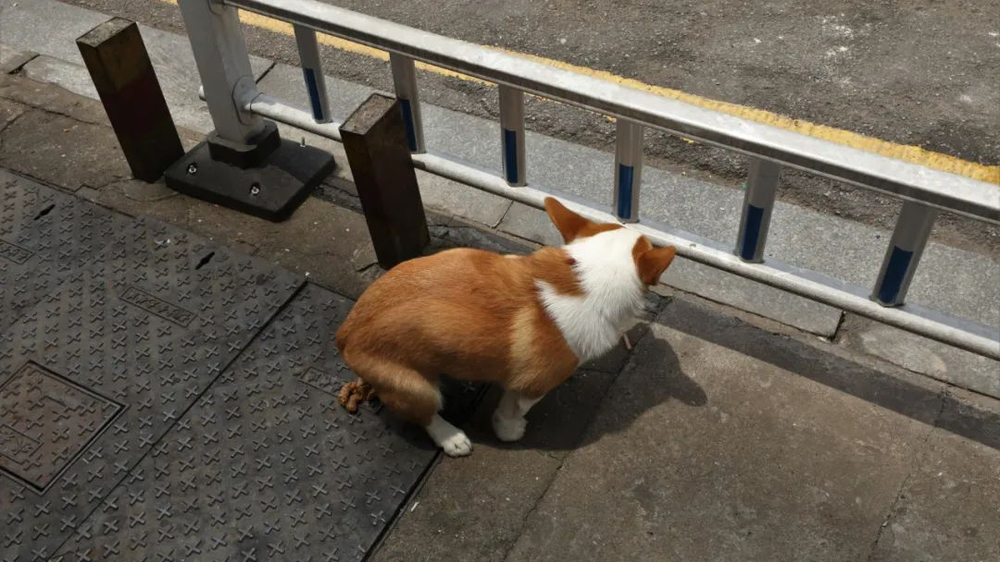

前几天和人说了一个看起来无厘头但其实很有道理的废话。作为扫街摄影重症爱好者，如果我说『有空一起拉屎』，那一定是一句最把你当好朋友的话了。
主要是，约人一起拉屎这件事。扫街最显著的成就不仅仅是知道哪里好拍照，出了很多很多契合城市发展灵魂和人文内核的好片；扫街还得知道内急了的时候，在这座城市里可以去哪里方便。而且这还不算，知道可以去哪拉屎那高德地图搜索一下厕所也可以。但如果要知道哪里厕所环境卫生一级棒，体验感极佳，并且还要在接下来扫街要去的路上。这样的认知地图就是真的厉害。不然你觉得你有多少内急，需要到城市的每一个角落里去解决问题呢。况且，如果是一般朋友。也不会直接邀约拉屎吧....怎么也是『这里很好看我们要不要去拍一组』或者『诶你看这里有好片我们也去巡礼一下』，不会直接没头脑地约这么不高兴的词句。所以约人一起拉屎，绝不仅仅只是一句有味道的客套。这是作为扫街人愿意把自己的种种secret base和你分享，把你当成可以日常一起消磨无聊的朋友，想和你一起沙雕一起市井一起找快乐的意思。
有时候我觉得我对不起茶颜。毕竟喝了这么多年，我也没有变甜。
人类如此偏爱建立体系和偏爱抽象结论，因此宁可蓄意歪曲真相。宁可装聋作哑，视而不见，只要能够证实自己的逻辑就可以。为什么这么坚定，这么郑重其事地相信，只有正常和积极的东西总之，只有幸福才对人有利呢？我不主张幸福，但我也不主张苦难。廉价的幸福好，还是崇高的痛苦好小说里应当有英雄，可这里却故意收集了非英雄的所有特点。
和废话博主还有调情大师一起玩，让想象力把我们沉浸到可以逃开的地步。我有一个不穿袜子的习惯。把嘴巴长大然后围着山岗一直跑直到嘴里都是风的好闻香味。
忙碌到无暇输出和输入的日子，往往才是最渴望阅读和表达的时刻。太没有安全感了于是和安全报警器谈恋爱。报警器报警了但没有接警，这是好些人mind palace的现实状况。
有些我已经讲烂了讲吐了讲满怀了的内容。为什么还有人觉得好像离生活状态很远。逻辑和人心都经不起考验。这是不用测试就会原形毕露的不信你看那么多抖机灵
以前没地方玩，去定王台看书。怎么兜兜转转还是来了定王台
对面没有51号别问了。我也不知道51号在哪里，不是单数一排双数一排这是个圈对面是3号。51出去旅游了




这个鱼感觉就是下点泡椒。血好吃。当晚就说要是再有一碗这样的鱼在路上的话，我可以一路开车不停歇地开到郑州去（虽然也不知道有多远